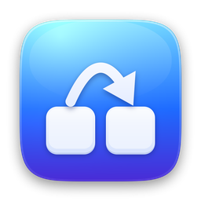

FL Shortcut
Tes propres raccourcis clavier pour FL Studio, sur Mac et Windows. Rien à installer dans FL : l'appli envoie les touches d'origine de FL, seulement quand FL est au premier plan.
Mac
macOS 13 ou plus récent · Apple Silicon et Intel
FLShortcut.dmg- Ouvre FLShortcut.dmg et glisse FL Shortcut dans Applications.
- Lance FL Shortcut : il s'installe dans la barre des menus.
- Clique sur Autoriser… : active FL Shortcut dans Réglages Système › Confidentialité et sécurité › Accessibilité.
Si macOS dit qu'il ne peut pas vérifier l'appli : Réglages Système › Confidentialité et sécurité, tout en bas, Ouvrir quand même. Fais-le seulement pour un fichier téléchargé depuis cette page.
Windows
Windows 10 ou 11 · x64 et ARM
FLShortcut-Windows-Setup.exe- Double-clique sur l'installeur, puis Installer. Aucun droit administrateur demandé.
- FL Shortcut se lance et se range dans la zone de notification, à côté de l'horloge.
- C'est tout : ouvre FL Studio et utilise tes raccourcis.
Si Windows affiche « Windows a protégé votre ordinateur » : Informations complémentaires, puis Exécuter quand même. Version portable sans installation : x64 · ARM.
Ce que ça fait
- Tes raccourcisMixer, Playlist, Piano Roll, REC, métronome, patterns… sur les touches que tu veux.
- MacrosEnregistrement rapide : preset de piste, armement, entrée et REC d'un seul raccourci (Mac, version de test).
- LégerRien dans FL, pas de MIDI. Le clavier n'est écouté que quand FL est devant.
- Pause⌃⌥⌘F sur Mac, Ctrl+Alt+Maj+F sur Windows.